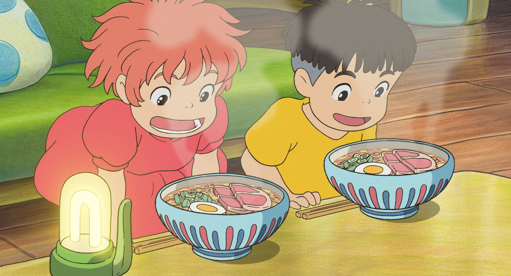
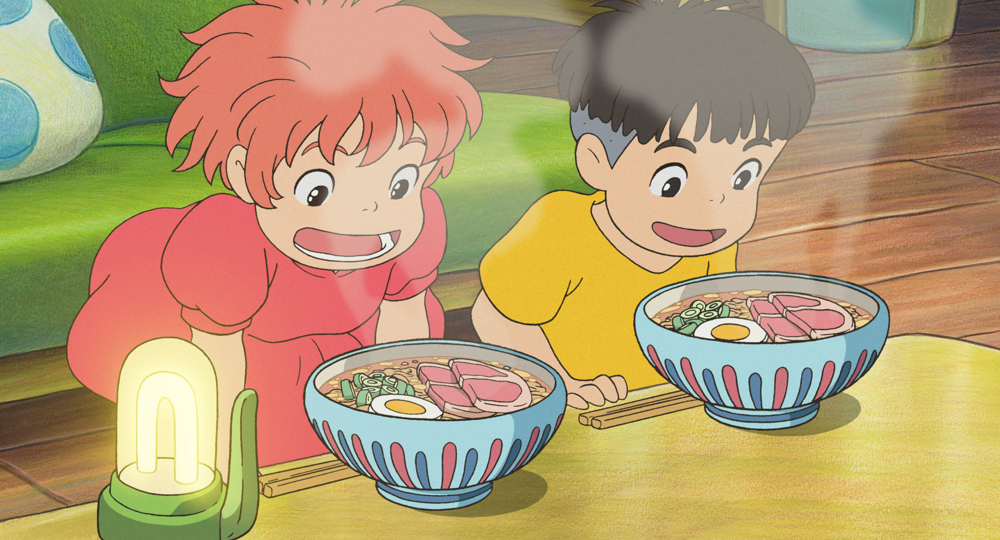
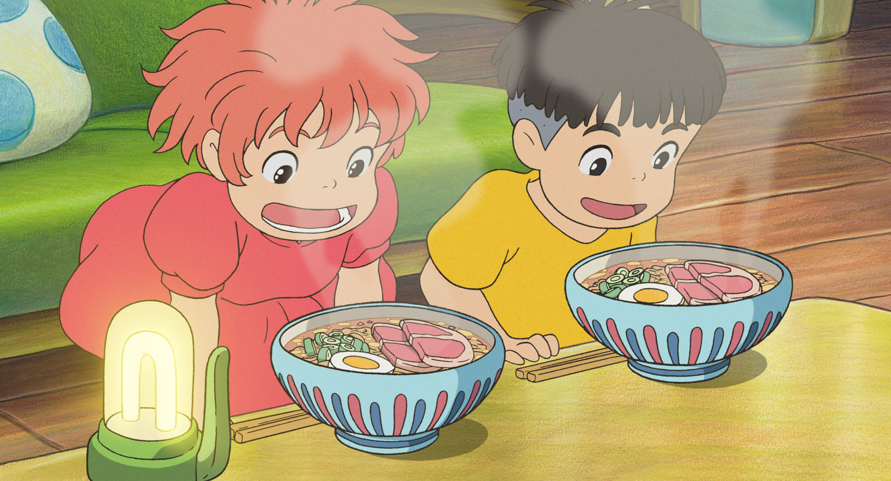

Deep under the surface of the ocean, a sea-wizard named Fujimoto stands at the bow of his submersible,surrounded by an air
bubble and an assortment of sea creatures. They swim circles around him as he pours magic potions into the water. Out of a side
porthole,surrounded by an air peeks out, making sure not to be seen, before waving goodbye to her smaller siblings and swimming
off to join a school of jellyfish. She rests on top of one, domed by another, as they float towards the surface and far from her home.
When she wakes up, she finds herself in the harbor of a seaside town, Tomonoura. When a large bottom trawler comes towards her, the goldfish swims away from the
jellyfish in an attempt to escape but is quickly pulled into the mess of garbage and debris that the trawler picks up in its net. She becomes trapped within
a glass jar but manages to escape the net and make it towards shallow water. Meanwhile, a young boy named Sosuke runs down the hillside path from his home to
the water's edge to play with his toy boat. There, he notices the goldfish stuck in the jar and breaks her out of it, though cutting his thumb in the process.
As he holds the seemingly lifeless fish in his hands, she licks his wound clean. Happy that she's alive, the boy takes her back up the hill as a series of strange
waves come in and reach for him. The waves return to deeper water where Fujimoto is waiting. He is horrified to hear from them that the goldfish, his daughter,
has been taken by a human.
